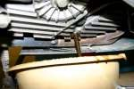
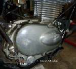

The drain plug is the bolt or cap at the lowest point of the engine that lets old oil out. It seals with a soft washer (aluminium or copper) or an O-ring. On many commuter singles, including the K-Light, the large drain cap also holds the oil strainer and its spring.
What it does
The plug holds oil in; the washer crushes slightly to make the seal. Over-tightening stretches the threads in the soft aluminium crankcase, and a washer that has been crushed once does not seal well again. Some plugs carry a magnet that catches steel particles.
Signs it is worn or failing
- Oil leaking from the drain plug.
- A plug that keeps turning and will not get tight: the thread is stripped.
- Rounded hex from the wrong spanner.
- On a magnetic plug, a beard of metal: see Metal particles in the oil.
- Some plugs have a magnet for steel particles. Some have an Allen socket head, which can be strong or weak by design.
- Check that you are not undoing the gearshift spring bolt that sits near some side drain bolts. See Tighten drain and filter bolts without stripping them.
When to replace it
Replace the washer or O-ring at every oil change. Replace the plug if the hex is rounded or the thread is damaged. A stripped crankcase thread needs a workshop repair insert.
What to match when buying
- Match thread size and pitch (for example M12 x 1.5), length and head size. A plug that is too long can hit parts inside.
- Washers: match inside and outside diameter. Use the material the maker used.
- On a strainer cap, match the O-ring size and the spring.
Fitting notes
- Home job: Replace the drain plug sealing washer, usually during Change the engine oil.
- Hot oil burns: let the engine cool a little and keep your arm out of the stream.
- Start the plug by hand. Tighten to the value in your bike's manual with a torque wrench, not "as tight as possible". MAVCC warns: be sure you have the drain plug and not a gearbox detent plug.
Reference (K-Light 125)
| Item | Value | PDF page |
|---|---|---|
| Filter spring screw cap (strainer cap) torque | 15 to 30 N·m; confirm it is the same cap on your bike | 194 |
| Oil change quantity | 1.1 ± 0.1 L | 53 |